Examples¶
Data Pipeline¶


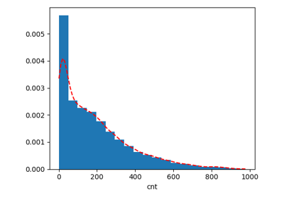
EDA


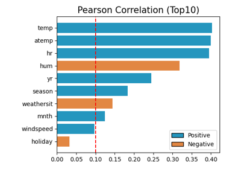
Feature Selection
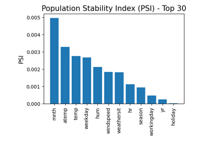
Two Sample Test
Post hoc Explainability¶
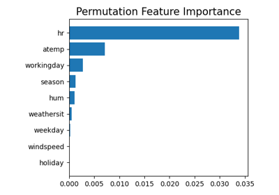
Permutation Feature Importance
Permutation Feature Importance
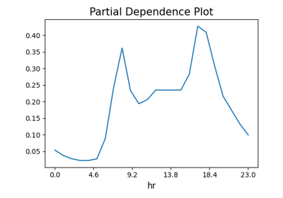
Partial Dependence Plot
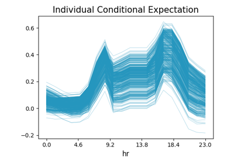
Individual Conditional Expectation
Individual Conditional Expectation
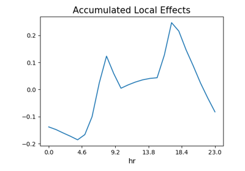
Accumulated Local Effects
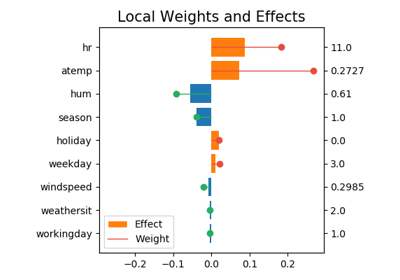
Local Interpretable Model-Agnostic Explanation
Local Interpretable Model-Agnostic Explanation

Interpretable Models¶
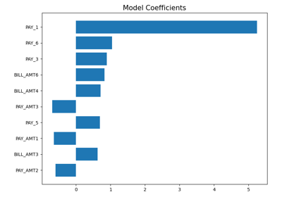
GLM Logistic Regression (Taiwan Credit)
GLM Logistic Regression (Taiwan Credit)


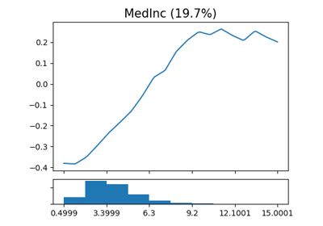
GAM Regression (California Housing)
GAM Regression (California Housing)
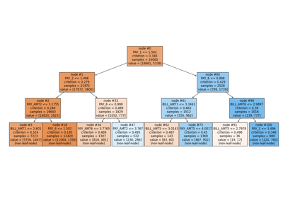
Tree Classification (TaiwanCredit)
Tree Classification (TaiwanCredit)

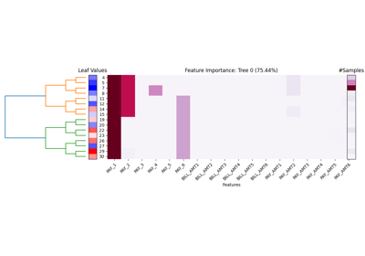
FIGS Classification (Taiwan Credit)
FIGS Classification (Taiwan Credit)
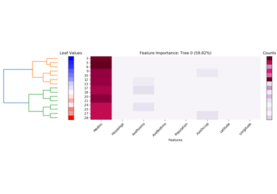
FIGS Regression (California Housing)
FIGS Regression (California Housing)
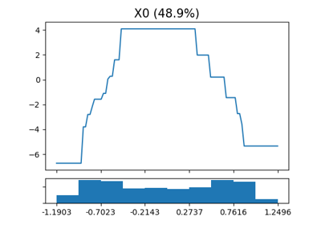
XGB-1 Classification (CoCircles)
XGB-1 Classification (CoCircles)

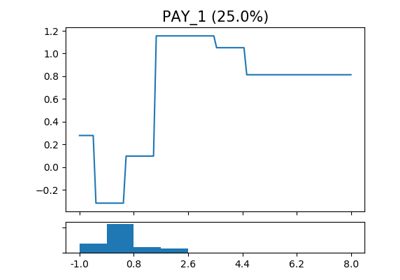
XGB-2 Classification (Taiwan Credit)
XGB-2 Classification (Taiwan Credit)
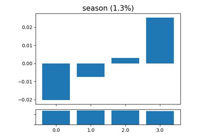
XGB-2 Regression (Bike Sharing)
XGB-2 Regression (Bike Sharing)


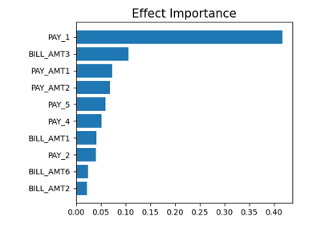
GAMI-Net Classification (Taiwan Credit)
GAMI-Net Classification (Taiwan Credit)
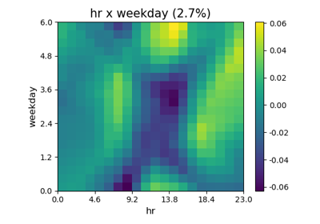
GAMI-Net Regression (Bike Sharing)
GAMI-Net Regression (Bike Sharing)
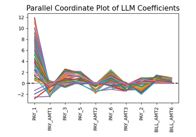
ReLU DNN Classification (Taiwan Credit)
ReLU DNN Classification (Taiwan Credit)
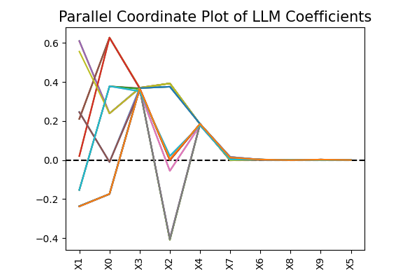
ReLU DNN Regression (Friedman)
ReLU DNN Regression (Friedman)
Outcome Testing¶


Model Comparison¶
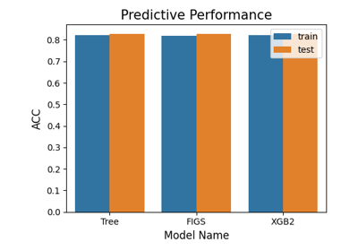
Model Comparison: Classification
Model Comparison: Classification
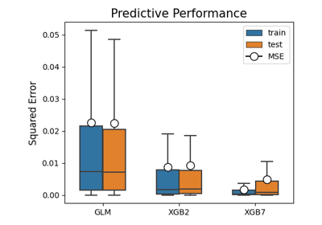
Model Comparison: Regression
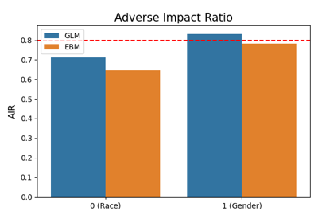
Fairness Comparison
Training and Testing External Models¶
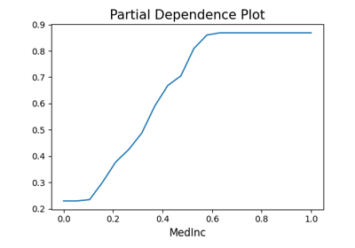
Train External Models
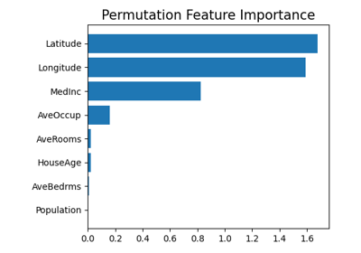
Registering Fitted Models and Run Diagnostic Tests
Registering Fitted Models and Run Diagnostic Tests
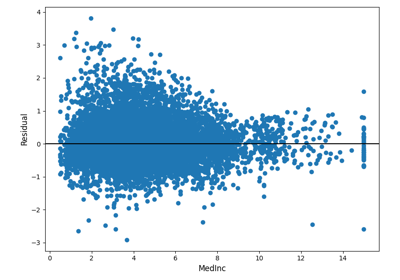
Testing External Models without Model Objects as Input
Testing External Models without Model Objects as Input